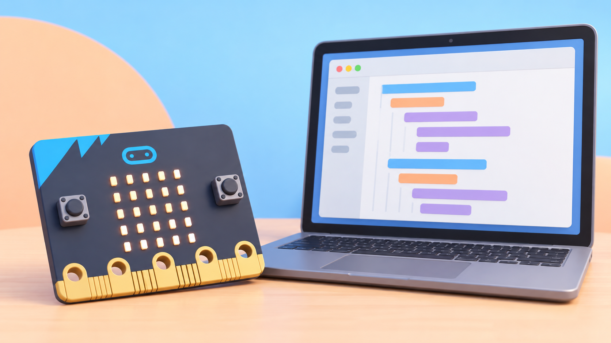

micro:bit: programar amb MicroPython i depurar amb el simulador
Llegir els botons A/B en Python, mostrar icones, provar la indentació i enviar el programa a una micro:bit.
🌱 Situació, repte i intenció
- Obrir el Python Editor oficial i localitzar el codi, el simulador, la referència i els avisos d’error.
- Relacionar els botons A/B i la matriu 5 × 5 amb instruccions Python.
- Reconéixer
import, un buclewhile, les condicionsifi la indentació. - Provar el comportament al simulador abans de transferir el programa.
- Comparar MicroPython i MakeCode Python sense barrejar-ne les biblioteques.
🎯 Aprenentatges i vocabulari
- Python Editor oficial amb MicroPython, simulador, autocompleció, referència i ressaltat d’estructura i errors.
- MicroPython sobre la placa:
button_a,button_bidisplayamb la matriu LED. - Transferència del programa a la micro:bit o prova prèvia sense maquinari.
- Diferència entre MicroPython i MakeCode Python, que usa funcions d’esdeveniment i una biblioteca pròpia de MakeCode.
🧰 Materials i preparació
- BBC micro:bit V1 o V2 amb cable USB; un portapiles és opcional per a la prova sense ordinador.
- Ordinador amb navegador compatible i accés a python.microbit.org.
- Targetes amb
A,B,HAPPYiCONFUSEDper anticipar la relació entrada–programa–eixida. - MakeCode o captures impreses per a comparar les dues versions de Python, si convé.
Obriu un projecte nou al Python Editor i llegiu el tutorial de referència integrat. El simulador permet començar sense placa. El V1 i el V2 comparteixen els botons i la matriu necessaris per a aquesta pràctica; no useu micròfon, altaveu ni logotip tàctil, que depenen del V2. Si voleu enviar el codi directament a la placa des del navegador, seguiu la compatibilitat i els passos que l’editor indica; si no, descarregueu el fitxer .hex i transferiu-lo per USB.
📅 Seqüència didàctica
Explorem el simulador i el panell de referència
Desenvolupament del pas
Obriu el Python Editor i localitzeu les pestanyes de referència, idees i API, l’àrea d’edició i el simulador. Trieu una instrucció de pantalla a la referència i arrossegueu-la a l’editor. Executeu un exemple amb el botó de reproducció del simulador i proveu els controls que simulen els botons de la placa.
Llegiu i prediu el programa
Desenvolupament del pas
Copieu el programa següent. Abans d’executar-lo, marqueu quines línies es repeteixen i quina eixida correspon a cada botó.
from microbit import *
while True:
if button_a.is_pressed():
display.show(Image.HAPPY)
if button_b.is_pressed():
display.show(Image.CONFUSED)from microbit import * carrega les funcions de la placa; while True manté les comprovacions actives; cada if prova un botó; display.show(...) mostra una icona. Les línies interiors han d’anar indentades. Si premeu A i B alhora, les dues condicions poden executar-se en el mateix cicle: observeu quin dibuix queda visible i expliqueu l’ordre de les instruccions.
Depureu al Python Editor
Desenvolupament del pas
Executeu primer el codi al simulador. Canvieu una icona i torneu a provar A i B. Després elimineu temporalment els espais d’una línia interior per veure com el ressaltat o el missatge d’error ajuda a localitzar la indentació incorrecta; desfeu el canvi i comproveu que el programa torna a executar-se. No descarregueu la versió amb error a la placa.

Transferiu el programa a una micro:bit
Desenvolupament del pas
Connecteu la placa per USB i useu l’opció «Send to micro:bit» si el navegador i els permisos són compatibles. Si aquesta opció no apareix, descarregueu el .hex, obriu la unitat de la micro:bit i copieu-lo. Espereu que la transferència acabe; després proveu A i B en la placa real i compareu el resultat amb el simulador.
Compareu amb MakeCode Python
Desenvolupament del pas
Obriu el mateix repte en l’opció Python de MakeCode. La forma orientada a esdeveniments és diferent:
def on_button_pressed_a():
basic.show_icon(IconNames.HAPPY)
input.on_button_pressed(Button.A, on_button_pressed_a)MakeCode permet canviar entre blocs, JavaScript i la seua sintaxi Python; el Python Editor oficial de micro:bit usa MicroPython amb from microbit import * i un bucle que consulta els botons. No copieu ordres basic de MakeCode dins del MicroPython ni funcions display de MicroPython dins del projecte MakeCode.
🧪 Evidències i avaluació
Feu quatre proves al simulador i a la placa: A, B, cap botó i A+B alhora. Registreu la predicció, l’eixida i les diferències entre simulador i maquinari. Per a depurar, comproveu importació, indentació, nom d’imatge, transferència acabada i editor triat. Canvieu una única cosa cada vegada; si el simulador respon però la placa no, reviseu primer que el fitxer s’ha transferit a la micro:bit correcta.
Preguntes per comprovar
- Quina part del codi manté el programa escoltant els botons?
- Per què les ordres de cada
iftenen sagnat? - Què diferencia l’esdeveniment de MakeCode del bucle de MicroPython?
- Quins errors pot detectar l’editor abans de transferir el fitxer?
- Quines diferències heu observat entre simulador i placa real?
✅ Evidències d’aprenentatge
- Guardeu els dos programes separats i etiquetats com a MicroPython i MakeCode Python, una taula de les quatre proves i una anotació de l’error d’indentació corregit. Indiqueu si l’execució és simulada o s’ha verificat a la placa física i quina versió de micro:bit heu utilitzat.
♿ Participació, accessibilitat i seguretat
Proporcioneu el codi imprés amb els nivells d’indentació marcats i permeteu arrossegar fragments en lloc d’escriure’ls tots. El simulador és una alternativa per practicar sense dispositiu; una parella pot llegir el codi mentre l’altra prova els botons. Desconnecteu el cable agafant-ne el connector i no pressioneu ni doblegueu la vora daurada de la placa.
🔗 Referents i adaptació
La guia oficial del Python Editor descriu referència, fragments, ressaltat, errors, autocompleció, simulador i transferència. L’article de la fundació MakeCode Python i MicroPython compara les dues sintaxis i els seus models d’execució. L’editor Python necessita haver-se carregat inicialment; després pot funcionar fora de línia en les condicions indicades a la guia oficial d’ús sense connexió. Les funcions de micròfon, altaveu i logotip tàctil no formen part d’aquesta pràctica i requereixen micro:bit V2.